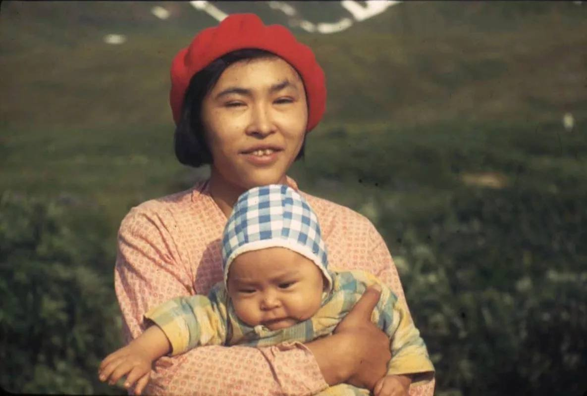
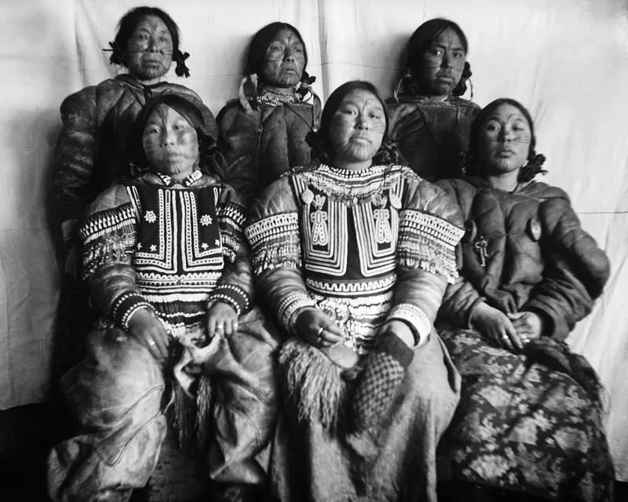

Народы России: Алеуты
| Главная | История | Язык | Культура | Традиции | Религия | Об авторе | Источники | ||
|
 Мама и ребенок алеутов |
Алеуты — коренное население Алеутских островов Тихого океана, островов Шумагина, а также западного берега Аляски вплоть до реки Угашик на севере. Большая часть живёт в США (Аляска), меньшая часть — в России (Камчатский край). Название «алеут» русского происхождения, было дано после открытия Алеутских островов, впервые встречается в документах 1747 года. |
 Представители алеутского народа |